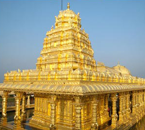
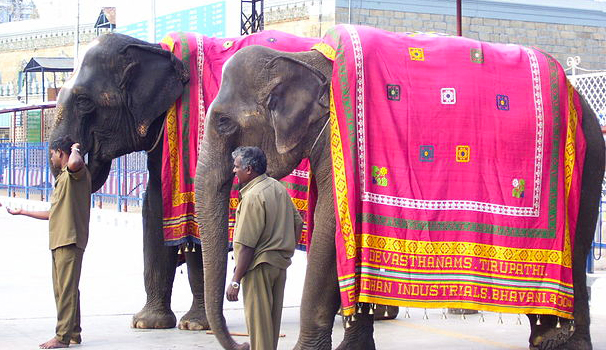

We are having a simple and traditional Telugu Brahmin style wedding
in the holy town of
Tirumala,Tirupati.It is a small ceremony with only close family and friends.
Date:
December 25th, 2013
Venue:
Vishaka Sarada Peetham, Tirumala.
The venue, Gogarbham area, is at a distance of 2 kms from check post
(which is on ring road serviced by TTD free bus every 5 min),
on Pathala Ganga road and is connected by an hourly bus.
Timings:
Different rituals start at different times during the day, beginning from 9 AM.
Some ceremonies are solely conducted by the groom's family and
others
will take place between both the families.
The main wedding auspicious starting time(muhurat) is at 10:59pm.
Dinning:
Breakfast, Lunch and Dinner will be served at the venue on
Dec 25th.
Breakfast will be served on the morning of December 26th too.
Accommodation:
Since accommodation on Tirumala hill is managed by TTD,
please
check out their website for availability and more details at http://www.ttdsevaonline.com.
There are many opinions for accommodation available at Tirupati
that can
be booked online before your travel.
Destination:
Tirumala - the home town of Lord Balaji/Venkateswara/Srinivasa/Govinda
is a hill town in Chittoor district of Andhra Pradesh, India.
The town is home to Sri Venkateswara temple,
dedicated to the Lord Venkateswara Swamy
and a major pilgrimage center for Hindus.
Sri Venkateswara temple
is said to be one of the most busiest and one of the most richest temples in the world.
While in Tirumala, please DO NOT:
Wear inappropriate clothing.
Consume alcohol.
Eat Meat, Egg and Fish (non-vegetarian food) considered as Meat in Hindu religion.
Carry mobile phone/camera/pager/video camera etc. while going for darshan.
They are banned inside the temple (inner) sanctum.
Weather: The weather can get chilly in Tirumala hills,
so we suggest guests to bring light sweaters, jackets or shawls.


Tirumala Temple.